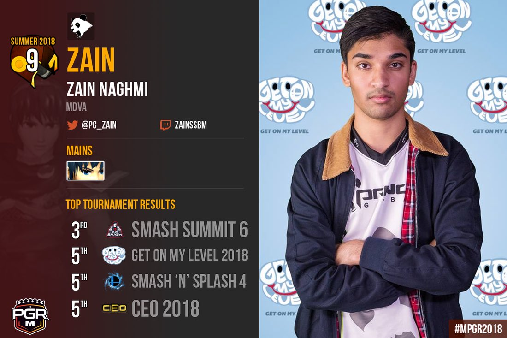
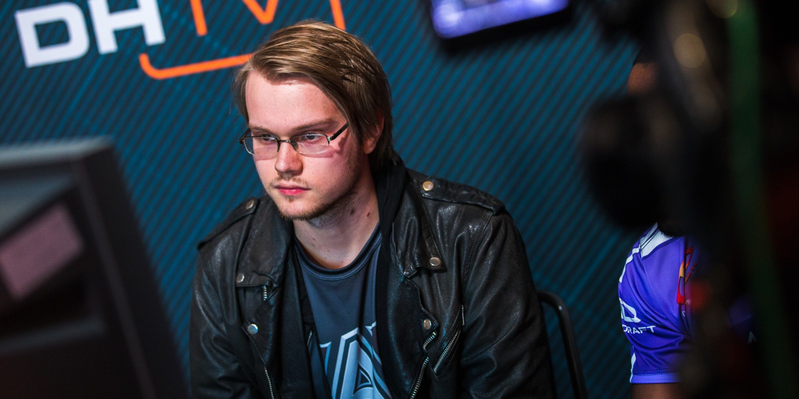
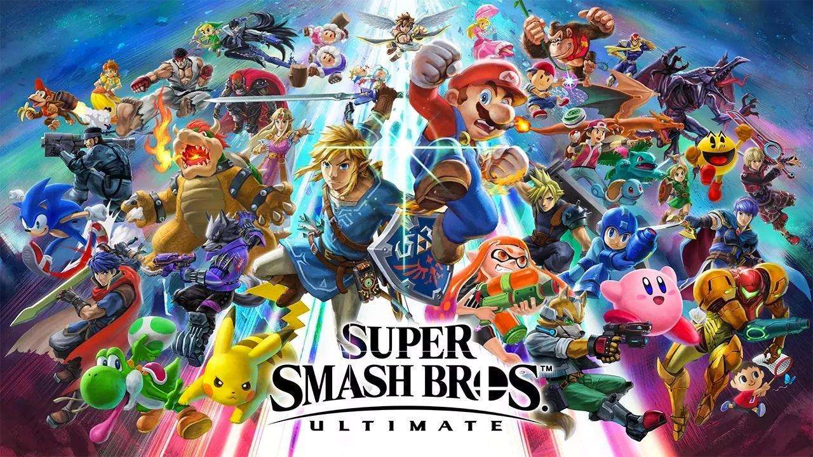
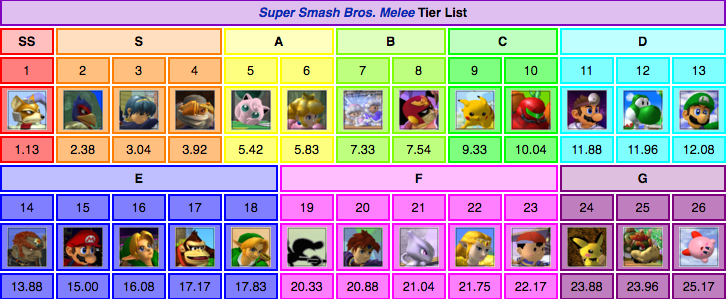
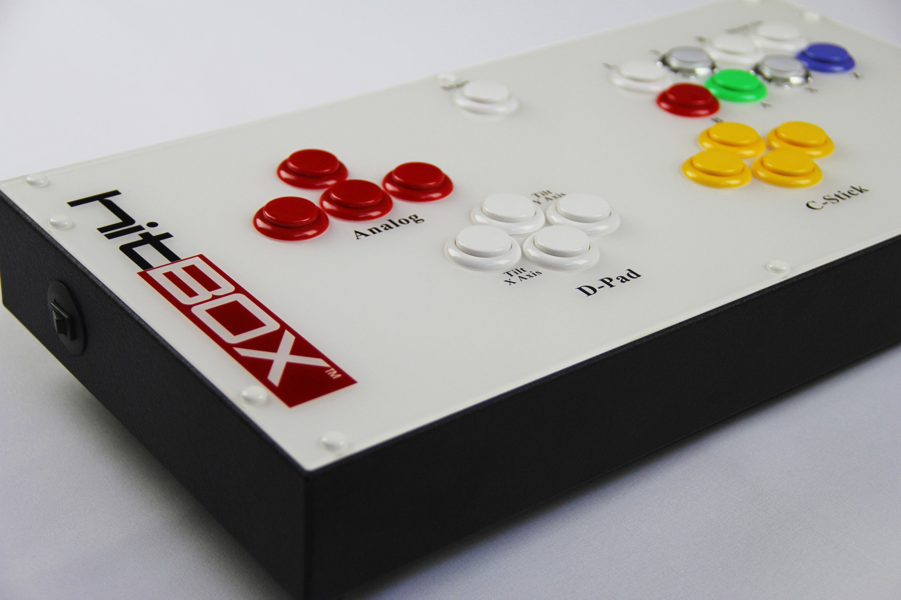
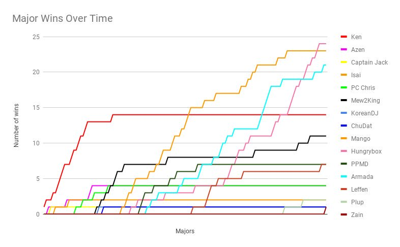

After winning 8/17 major tournaments this year, Juan "Hungrybox" Debiedma is generally considered the best player in the world.

Zain, the Rising Star
Rising from not being ranked, to 66th, to 22nd, to top 10 in two years is incredibly impressive, and with wins on Plup, Mango, and Hungrybox, just to name a few, 2018 was a great year for Marth main Zain Naghmi.

Armada, the Retired God
Adam "Armada" Lindgren, considered to be one of the greatest players of all time, has recently retired from singles. He says he will focus on doubles and the new Smash game coming out, Ultimate.
Super Smash Bros. Ultimate and why Melee players should try it
Published 12/5/18

Super Smash Bros. Ultimate is the fifth main entry in the Smash series, and will come out on December 7th, 2018. It has been advertised as the "ultimate" smash game, bringing back fan favorite characters, stages, and mechanics. From what people who played the demo and the E3 build of the game, it is faster than the previous game in the series, Super Smash Bros. for 3DS and Wii U. The speed of the newer games and lack of long, freeform combos has turned melee players away from both Smash 4 and its predecessor, Brawl. This issue is seemed to be fixed in Ultimate, as many people have already posted videos featuring long combos, done in the improved training mode. In addtion to this, Nintendo has brought back both directonal airdodging, and Melee-style dashdancing, both mechanics that Melee players have been asking for a return for years. Characters like Snake, Pichu, Young Link, and Wolf have returned after a hiatus in the series, to many fans' suprise. The new feature of disabling stage hazards allows many chaotic stages people wanted to play on tournament viable, such as WarioWare Inc. from Brawl and Kalos Pokémon League from Smash 4. I will be playing Snake, Roy, Captain Falcon, Palutena, and Young Link! I'm very excited to compete in and run tournaments for it and I hope to see some of you joining in.
Who are the top tiers?
Published 11/28/18

The last Smashboards Back Room tier list was in December of 2015, 3 years ago. Many top players think that the meta has shifted since then and it needs an update. Some notable changes are Falco, Jigglypuff, Marth, and the bottom high tiers. Falco is seen as much weaker compared to the current tier list, notably being at the same spot as Falcon on Leffen's latest tier list. The performance of Falco players has also been slightly subpar. Despite new Falco players like Ginger rising the ranks, Mango has had a year long slump in results, not winning a tournament since Super Smash Con 2017, which took place August 10th-13th, 2017. Westballz, another notable Falco player, has not had a great year. As stated before, Leffen placed Captain Falcon at the same place as Falco on his tier list, which is higher than the F-Zero racer normally is. This can be attributed to Wizzrobe, N0ne, S2J, and Gahtzu's recent wins, especially Wizzy. He won Optic Arena against notable players like Hungrybox, Bananas, Swedish Delight, N0ne, S2J, AbsentPage, and Gahtzu. Ice Climbers players have also had a resurgence after Armada's retirment, including Bananas and ARMY. Pikachu and Yoshi are both seen as relatively niche characters but due to Axe and aMSa both being top ten this year, leaving Leffen to be the only solo Fox main in top ten. In addition to this, we have seen new Yoshi players like n3zModGod and the return of Leffen's Yoshi as a pocket. The most interesting of these character debates in my opinion, are Marth and Jigglypuff. Hungrybox has shown his conistency and skill, leading Leffen to place Puff at the top of the tier list, due to her ease of use compared to the rest of the top tiers, and her lack of risk compared to the reward she gets. Marth is also placed at the same rank as Fox, and Leffen has infamously said that "Marth-Fox is 60-40," which has been a debate for years. The rise of Zain to top ten this year gives a strong argument to a change from #3 to #2, if Puff doesn't take the top spot.
Should the SmashB0xx be legal?
Published 11/21/18

The SmashB0xx is a special type of GameCube controller modeled after arcade sticks like the Hitbox, designed to prevent further hand damage. The product has most notably been designed by HitBox and Hax$, a notable Falcon turned Fox main. He quit Melee due to intense hand pain from executing tech skill on a normal GameCube controller. He seeks to create an alternative so people concerned with damage can still play the game. He has also helped made a modpack for the game to fix certain issues that controllers have, so that even people who cannot afford to buy a controller guaranteed to have dashback, good wavedashes, shielddrop, and no snapback. This could cost you hundreds of dollars if you buy it from a trusted controller modder. But the issue here is not with the modpack; it is already used at almost all tournaments. The issue is with the SmashB0xx as it opens the door to other alternative controllers. What stops the owner of the SmashB0xx from editing the Arduino inside the controller and changing a button to do a perfect multishine? This would take skill out of the game and many TOs and players are concerned. It would open a slippery slope for other control mods that might be more malicious. However, it would help prevent hand pains and injuries competitive Melee is known for. I think the community is doing a good job testing and limiting this, most tournaments generally allowing it. Hax$ has used it at almost every tournament he goes to and he has become to be ranked 45th on the 2017 Melee It On Me Power Rankings.
Zain's Victory at Shine and why it's important
Published 11/14/18

Zain winning Shine makes him the first new person to win a major since Plup. He is the first person outside of today's top 6 to win a major since ChuDat in 2007 at Pound 2. This breakthrough has opened up the possibility of Zain being part of the top 6, and opening the door to tournament wins for other players usually considered improbable winners of even smaller tournaments. Wizzy's win at Optic Arena is further evidence, but Zain's recent performance has put him above Wizzrobe in most people's top tens. My personal top 10 is #1 Hungrybox, #2 Leffen, #3 Plup, #4 Mew2King, #5 Zain, #6 Mang0, #7 Wizzrobe, #8 aMSa, #9 Axe, and #10 SFAT. I think that #6-8 could be swapped around generally, but I don't think Wizzrobe's top #6 ticket is certified before he wins a major. Even throughout Mang0's gap in tournament wins, he has had good recent results, with 3rd at Smash Summit 7, 2nd at GameTyrant Expo 2018, 3rd at The Big House 8, and 3rd at Shine 2018.